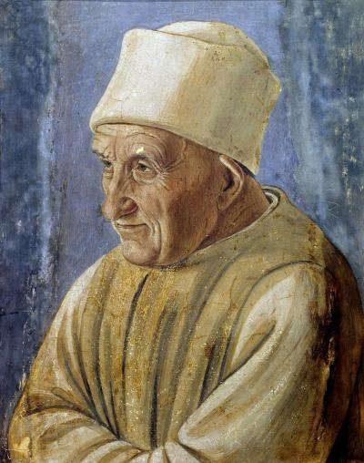

Картинная галерея портретов
 Шоколадница
Шоколадница

“Портрет старика”
Гладкий синий фон, строгий плащ и шапочка выделяют морщинистое лицо старого человека со спокойным взглядом, чей портрет останавливает внимание простотой трактовки и пристальным вниманием к модели. Портретируемый изображен сидящим в трехчетвертном повороте, и хотя взгляд его не направлен непосредственно на зрителя, зрителю открыто почти все его лицо. Неизвестно, кем был этот старик, однако черты его личности проступают на портрете, выполненном в характерной для Филиппино изящной и искренней манере письма. В двенадцать лет, после смерти своего отца Филиппо Липпи, он остался сиротой во Флоренции и год спустя начал работать в мастерской Сандро Боттичелли, бывшего учеником его отца. Первым значительным заказом Филиппино стало завершение фресок Мазаччо, которые тот не успел закончить. Работа над ними принесла художнику известность.
 “Портрет
“Портретнотариуса”